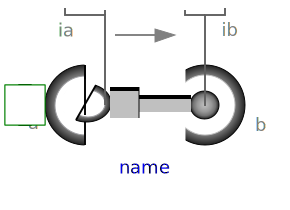
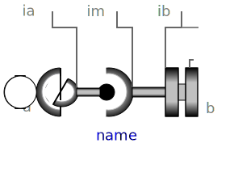
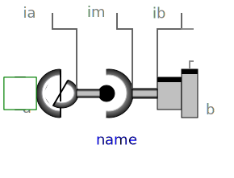
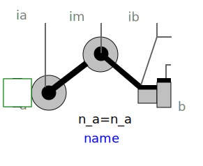

The joints in this package are mainly designed to be used in kinematic loop structures. Every component consists of 3 elementary joints. These joints are combined in such a way that the kinematics of the 3 joints between frame_a and frame_b are computed from the movement of frame_a and frame_b, i.e., there are no constraints between frame_a and frame_b. This requires to solve a non-linear system of equations which is performed analytically (i.e., when a mathematical solution exists, it is computed efficiently and reliably). A detailed description how to use these joints is provided in MultiBody.UsersGuide.Tutorial.LoopStructures.AnalyticLoopHandling.
The assembly joints in this package are named JointXYZ where XYZ are the first letters of the elementary joints used in the component, in particular:
| P | Prismatic joint |
| R | Revolute joint |
| S | Spherical joint |
| U | Universal joint |
For example, JointUSR is an assembly joint consisting of a universal, a spherical and a revolute joint.
This package contains the following models:
| Model | Description |
|---|---|
| JointUPS | Universal - prismatic - spherical joint
aggregation
|
| JointUSR | Universal - spherical - revolute joint
aggregation
|
| JointUSP | Universal - spherical - prismatic joint
aggregation
|
| JointSSR | Spherical - spherical - revolute joint aggregation
with an optional mass point at the rod connecting the two spherical
joints
|
| JointSSP | Spherical - spherical - prismatic joint
aggregation with an optional mass point at the rod connecting the
two spherical joints
|
| JointRRR | Revolute - revolute - revolute joint aggregation
for planar loops
|
| JointRRP | Revolute - revolute - prismatic joint aggregation
for planar loops
|
Note, no component of this package has potential states, since the components are designed in such a way that the generalized coordinates of the used elementary joints are computed from the frame_a and frame_b coordinates. Still, it is possible to use the components in a tree structure. In this case states are selected from bodies that are connected to the frame_a or frame_b side of the component. In most cases this gives a less efficient solution, as if elementary joints of package Modelica.Mechanics.MultiBody.Joints would be used directly.
The analytic handling of kinematic loops by using joint aggregations with 6 degrees of freedom as provided in this package, is a new methodology. It is based on a more general method for solving non-linear equations of kinematic loops developed by Woernle and Hiller. An automatic application of this more general method is difficult, and a manual application is only suited for specialists in this field. The method introduced here is a compromise: It can be quite easily applied by an end user, but for a smaller class of kinematic loops. The method of the "characteristic pair of joints" from Woernle and Hiller is described in:
| Name | Description |
|---|---|
|  JointUPS | Universal - prismatic - spherical joint aggregation (no constraints, no potential states) |
|  JointUSR | Universal - spherical - revolute joint aggregation (no constraints, no potential states) |
|  JointUSP | Universal - spherical - prismatic joint aggregation (no constraints, no potential states) |
| Spherical - spherical - revolute joint aggregation with mass (no constraints, no potential states) | |
| Spherical - spherical - prismatic joint aggregation with mass (no constraints, no potential states) | |
| Planar revolute - revolute - revolute joint aggregation (no constraints, no potential states) | |
|  JointRRP | Planar revolute - revolute - prismatic joint aggregation (no constraints, no potential states) |